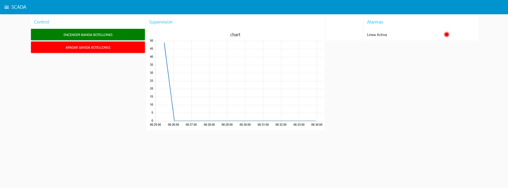
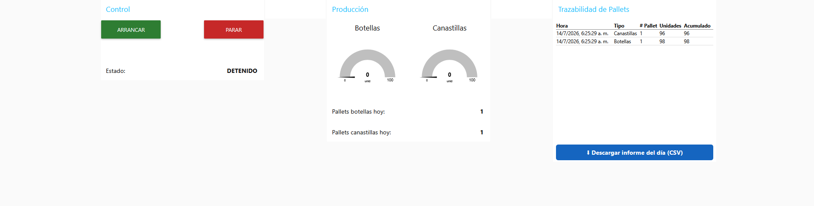

La capa SCADA conecta al operador con el proceso: navegación clara, jerarquía de alarmas y trazabilidad de comandos; preparado para despliegue en arquitectura cliente-servidor del laboratorio.
HMI y ISA-101
Jerarquía de pantallas, estados del proceso, codificación por color, consistencia de controles y pruebas de contraste/legibilidad.

Modelo de tags y nomenclatura
Convención de nombres, unidades, escalas, historización y vínculo con variables PLC; espacio para diccionario exportable (CSV/PDF).
Modelo de tags SCADA
Definición de tags de proceso, alarmas y eventos vinculados a la lógica del PLC y las variables de planta.
Disponible tras la sustentación final · Mayo 2026
Alarmas y eventos
Clasificación, prioridades, supresión, enrutamiento y registro de reconocimiento; pruebas de tormenta de alarmas y tiempos de respuesta.
- Lista maestra de alarmas con causa probable y acción.
- Pruebas de histeresis y anti-chattering.
- Integración con bitácora de operador.
Gestión de alarmas y eventos
Configuración del sistema de alarmas con priorización, shelving y racionalización según ISA-18.2.
Disponible tras la sustentación final · Mayo 2026
Trazabilidad y producción
Panel de arranque/paro de línea, conteo en tiempo real por producto (botellas y canastillas) y trazabilidad de pallets con acumulado y exportación del informe diario.

Proyecto Ignition (visión)
Perspectivas, ventanas, UDT donde aplique, y conexión OPC/UA o driver al emulador; capturas de runtime y documentación de despliegue.
Implementación en Ignition
Proyecto SCADA en Ignition con conexión OPC al emulador de PLC, historización de datos y dashboards de OEE.
Disponible tras la sustentación final · Mayo 2026
Videos del Módulo
Material audiovisual de supervisión SCADA.
Video del módulo
Demostración del sistema SCADA en operación con el gemelo digital.
Pendiente · 2026